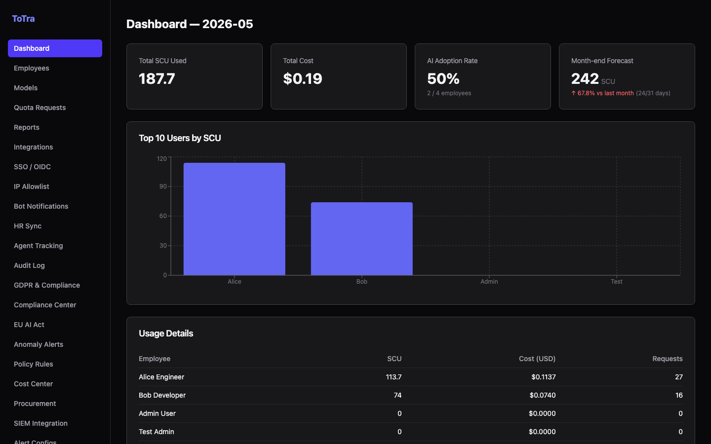
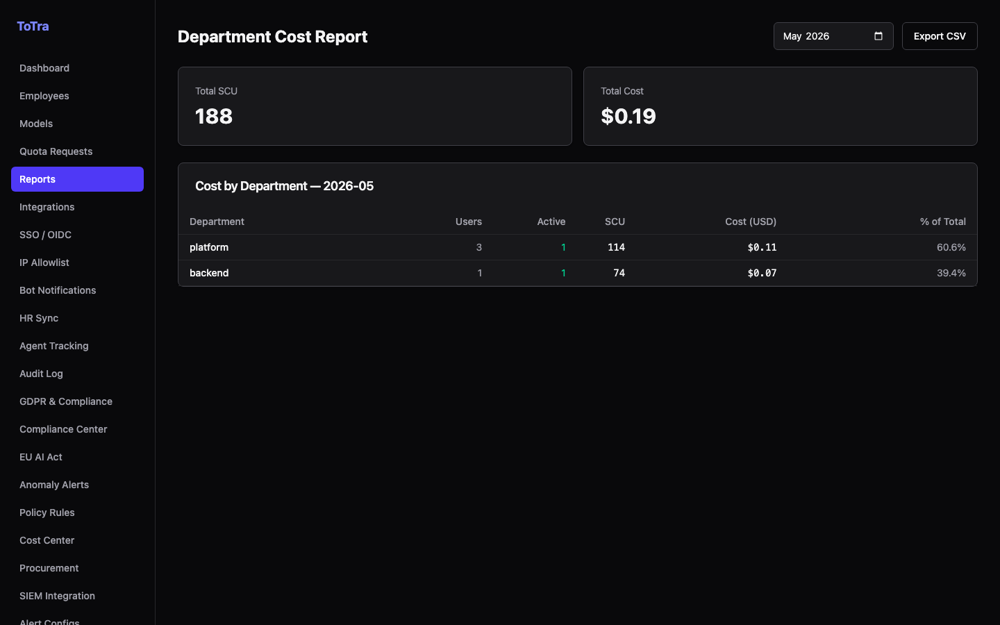
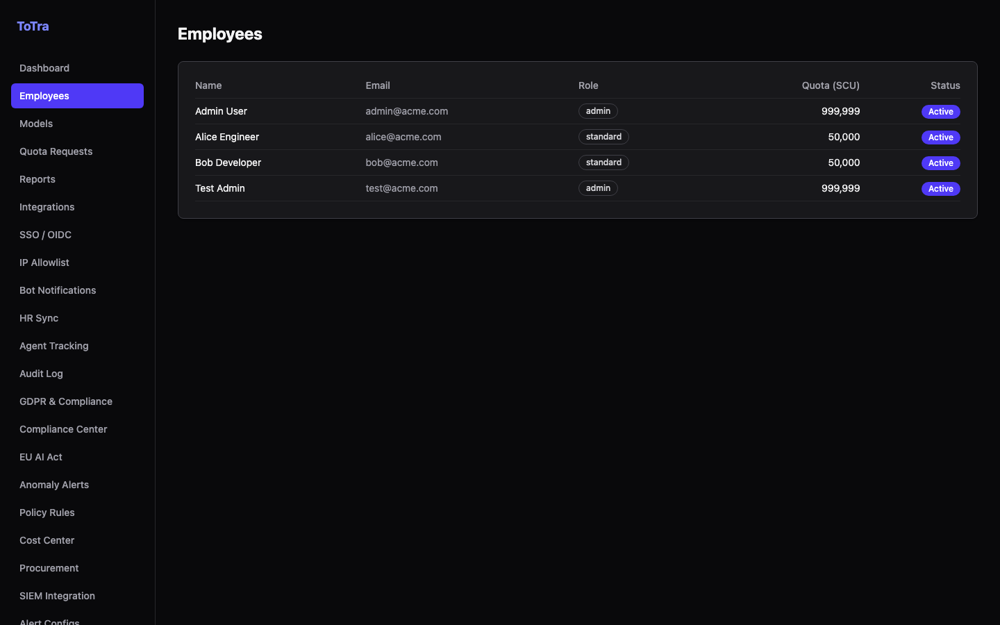
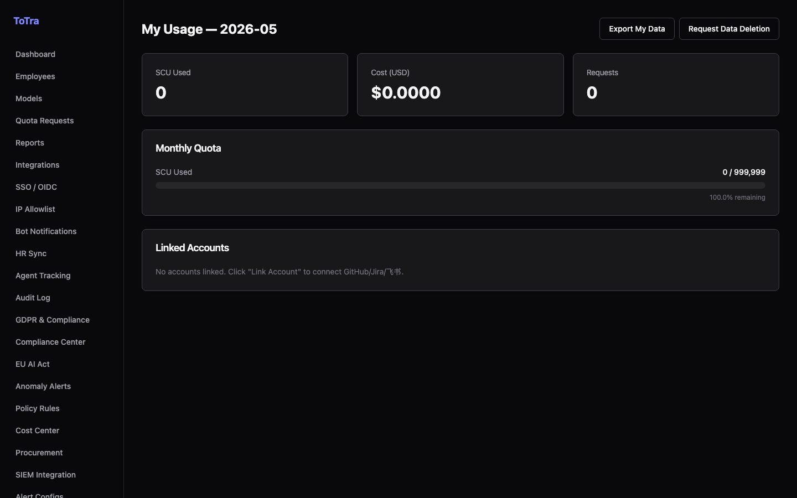

OpenAI
OpenAI
 Anthropic
Anthropic
 Gemini
Gemini
 Mistral
Mistral
 Llama
Llama
 Cohere
Cohere
 Azure
Azure
 Bedrock
Bedrock
 Ollama
Ollama
One line of code to add quota enforcement, PII blocking, cost tracking, and compliance to any LLM. No refactoring. No lock-in.
OpenAI
Anthropic
Gemini
Mistral
Llama
Cohere
Azure
Bedrock
Ollama
Core Capabilities
One gateway, total control over cost, compliance, and visibility across every model and team.
18 language groups scanned in real time. Sensitive data is detected, redacted, and logged before it ever reaches a provider — GDPR-ready out of the box.
Per-user, per-team, per-department quota enforcement. Requests over limit get a 429 before touching any provider. Real-time alerts, chargeback CSV export.
Semantic deduplication cache, load balancing, and automatic failover across providers. Cuts redundant API costs and reduces latency for repeated prompts.
OIDC single sign-on, RBAC with scoped JWT keys, immutable audit chain, EU AI Act checklist, and configurable data retention policies — all included.
Product
From cost dashboards to per-user analytics — everything your team needs, in one clean admin UI.




Integration
Self-host on any server with Docker Compose, or deploy to Railway in under 5 minutes. Your keys, your infrastructure.
Change one URL in your existing SDK config. ToTra is 100% OpenAI-compatible — no refactoring, no new SDK to learn.
Every request is routed, cached, audited, and checked against your policies automatically. Full observability from the first call.
Drop-in Integration
ToTra speaks the OpenAI API. Your existing Python, Node, Go, or Java SDK works without modification.
from openai import OpenAI # Before: direct provider call client = OpenAI(api_key="sk-...") # After: route through ToTra ✓ client = OpenAI( api_key="your-totra-token", base_url="https://your-totra.railway.app/v1" ) # Same code — now with governance resp = client.chat.completions.create( model="gpt-4o", messages=[{ "role": "user", "content": "Hello, world" }] )
p95 Routing Overhead
LLM Providers
OpenAI API Compatible
PII Language Groups
The Status Quo
Every team calling LLMs without a gateway is one bad prompt loop away from a $500 bill — and zero way to explain it to compliance.
Use Cases
Whether you're shipping features, proving compliance, or managing infrastructure — ToTra fits your workflow.
Add governance to your AI features in an afternoon. No infrastructure expertise needed.
Meet GDPR, HIPAA, and EU AI Act requirements without slowing down your AI rollout.
Forecast, allocate, and chargeback AI costs with the precision of cloud compute billing.
Run a reliable AI infrastructure layer your whole organization can depend on.
Architecture
Every request passes through a deterministic pipeline inside a single Go process — no network hops, no sidecars.
Open Source
Your data, your keys, your infrastructure. ToTra is MIT-licensed and runs entirely inside your own environment.
Read it, fork it, modify it, deploy it. No SaaS fees, no vendor lock-in, no usage restrictions.
Your data never touches our servers. Run on any cloud, on-prem, or bare metal. Kubernetes and Docker Compose included.
Built with real enterprise requirements in the open. Pull requests welcome — bring your edge cases.
# Clone and run in under 2 minutes git clone https://github.com/SugaC-275/ToTra cd ToTra cp .env.example .env # add your LLM API keys docker compose up -d # Your gateway is live at http://localhost:8080
FAQ
Yes. The gateway is written in Go, handles concurrent requests with < 2ms overhead, and has been benchmarked at 200+ concurrent virtual users. It ships with Docker Compose and has been used in real production workloads.
Yes. Point your OpenAI SDK's base_url at your ToTra instance. No other changes needed. The same request and response shapes are preserved — streaming, function calling, and all other features pass through unchanged.
Requests are scanned by a Go-native PII detector supporting 18 language groups before being forwarded to any provider. Detected content is redacted or blocked based on your configured policy. No data leaves your environment during scanning.
The gateway returns HTTP 429 before the request reaches any provider. No charges are incurred, no provider API key is consumed. Configure soft-warning thresholds and hard cutoff limits independently per team or integration.
Yes. Docker Compose, Kubernetes, Railway, or any VM. Your API keys and data never leave your environment. There is no call-home, no telemetry, and no dependency on external ToTra services of any kind.
Get Started
Self-hosted and open source. Deploy to Railway in 5 minutes, or run locally with a single Docker Compose command.